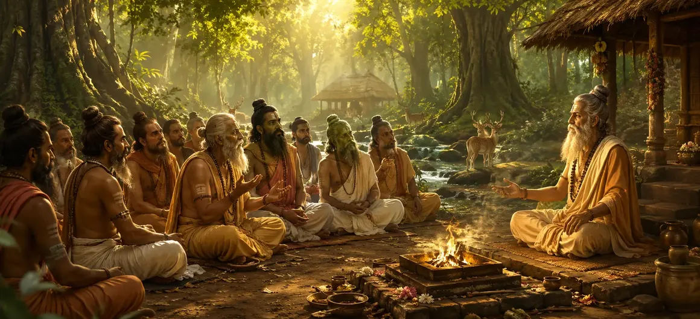

The Questions of the Sages
The second chapter of the Vayaviya Samhita captures the deep and earnest inquiries raised by enlightened sages seeking the ultimate truth of Lord Shiva.
Driven by compassion for humanity, these great seers probe the core mysteries of devotion, cosmic creation, and liberation.
This chapter sets the discursive framework that guides the theological teachings of the entire Samhita.
Chapter 2 Highlights
Earnest Inquiry
Captures the profound questions posed by sages concerning supreme reality.
Universal Compassion
Shows how sages inquire for the ultimate welfare of future generations.
Core Devotion
Explores the relationship between unwavering devotion and divine grace.
Knowledge Structure
Establishes the thematic roadmap for subsequent chapters in the Samhita.
Humility of Seekers
Highlights the pure state of mind required to approach spiritual mysteries.
Path to Liberation
Focuses on how inquiry dissolves ignorance and brings lasting peace.
Core Topics in This Chapter
The Gathering of Enlightened Sages
Chapter 2 opens with a sacred assembly of great sages who have dedicated their lives to spiritual realization.
Their collective presence creates an aura of divine energy, making the environment ripe for receiving supreme truths.
The Motivation Behind the Inquiry
Observing the struggles of humanity in the material world, the sages feel a deep urge to seek definitive answers from higher realms.
Their questions are not born of idle curiosity, but of profound compassion and a desire to alleviate suffering.
Inquiries on the Nature of Lord Shiva
The sages inquire into the dual aspects of Lord Shiva—both His transcendent formless reality and His accessible manifest grace.
They ask how finite human minds can comprehend the infinite consciousness that governs the cosmos.
The Synthesis of Bhakti and Jnana
A major portion of the inquiry addresses whether devotion (Bhakti) or spiritual knowledge (Jnana) is the superior path to liberation.
The sages seek clarification on how these two powerful spiritual currents harmoniously merge in the worship of Shiva.
Inquiries for Universal Welfare
Every question raised is framed with the ultimate welfare of humanity in mind, ensuring that the answers will benefit all future seekers.
This altruistic approach elevates the dialogue from a private discussion to a universal scripture.
Setting the Stage for the Naimisha Episode
The chapter concludes by establishing the sacred forest setting where these questions are formally addressed.
This transitions the narrative directly into the legendary Naimisha forest discourse.
Transition to Chapter 3
With the sages' questions clearly articulated, the text flows seamlessly into Chapter 3, 'The Naimisha Episode'.
Chapter 3 details the historic gathering in the Naimisha forest where these profound questions receive divine answers.
Key Teachings of Chapter 2
Power of Asking
Sincere inquiry is the foundational catalyst for spiritual awakening.
Selfless Intention
Spiritual questions must be driven by a desire to uplift all beings.
Shiva's Mystery
Recognizing that the supreme reality transcends ordinary human logic.
Unified Path
Bhakti and Jnana work together to dissolve illusion and suffering.
Reverent Dialogue
Sets a model for teacher-student interaction in sacred traditions.
Gateway to Naimisha
Prepares the reader for the grand narrative unfolding in Chapter 3.
Spiritual Reflection
The questions raised by the sages remind us that true spiritual growth begins with an active, sincere quest for truth. By questioning the transient nature of worldly existence, the seeker opens the door to higher divine wisdom.
Living the Message of Chapter 2
Encourage a questioning mindset in your own spiritual practice, seeking deeper meaning beyond superficial appearances.
Direct your inquiries toward self-realization and the welfare of others rather than mere intellectual debate.
Emulate the humility and compassion of the ancient sages as you walk the path of devotion.
Key Spiritual Concepts
The collective and profound inquiries raised by the sages.
The vision of universal welfare guiding all spiritual questions.
The harmonious synthesis of devotion and spiritual knowledge.
The earnest inquiry into the supreme reality of Lord Shiva.
The sacred prelude leading into the Naimisha forest gathering.
The active search for the path of ultimate liberation.
Chapter Summary
Vayaviya Samhita Chapter 2 presents The Questions of the Sages. Capturing the earnest inquiries of enlightened seers regarding the nature of Lord Shiva, the synthesis of devotion and knowledge, and the welfare of humanity, this chapter establishes the foundational dialogue of the text. It serves as the direct prelude to Chapter 3, 'The Naimisha Episode', continuing the grand exploration of the Shiva Purana.
Frequently Asked Questions
1. What is the main theme of Vayaviya Samhita Chapter 2?
Chapter 2 centers on the profound inquiries posed by assembled sages regarding the nature of Lord Shiva, the path of pure devotion, and the means to supreme liberation.
2. Why do the sages raise these questions?
The sages raise these questions out of deep compassion for humanity to dispel ignorance and guide seekers toward spiritual enlightenment.
3. What relationship exists between devotion and knowledge in this chapter?
Devotion (Bhakti) and knowledge (Jnana) are portrayed as complementary and inseparable paths leading to ultimate realization.
4. How does this chapter advance the narrative of the Vayaviya Samhita?
It structures the core theological discussions and sets up upcoming revelations regarding sacred rituals and cosmic truths.
5. What qualities characterize the inquiry of the sages?
Their inquiry is marked by supreme humility, intense longing for truth, and freedom from worldly attachments.
6. What is the next chapter for navigation after Chapter 2?
The next chapter for navigation is Chapter 3, titled 'The Naimisha Episode'.
“When earnest sages inquire into the supreme reality with pure hearts, the gates of divine revelation swing wide open for all humanity.”
Continue Through Vayaviya Samhita
Chapter 2 details The Questions of the Sages. Continue to Chapter 3, The Naimisha Episode.